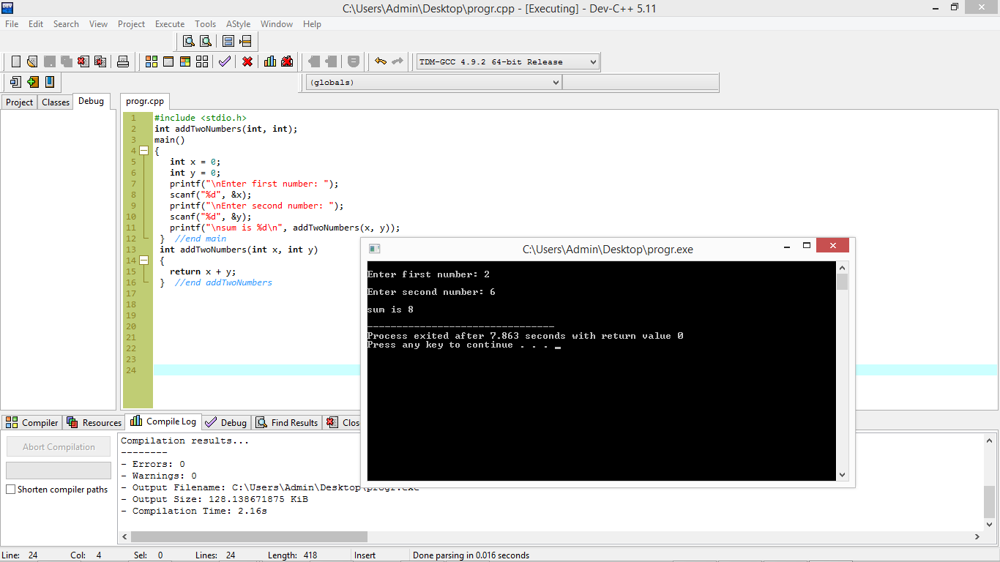

Ponter to function
One of the greatest benefits of using pointers is the ability to pass arguments to functions by reference. By default, arguments are passed by value in C, which involves making a copy of the incoming argument for the function to use.
Depending on the storage requirements of the incoming argument, this may not be the most efficient use of memory
Example
In this program, I pass two integer arguments to my addTwoNumbers function in a printf() function. This type of argument passing is called passing by value. More specifically, C reserves extra memory space to make a copy of variables x and y and the copies of x and y are then sent to the function as arguments.